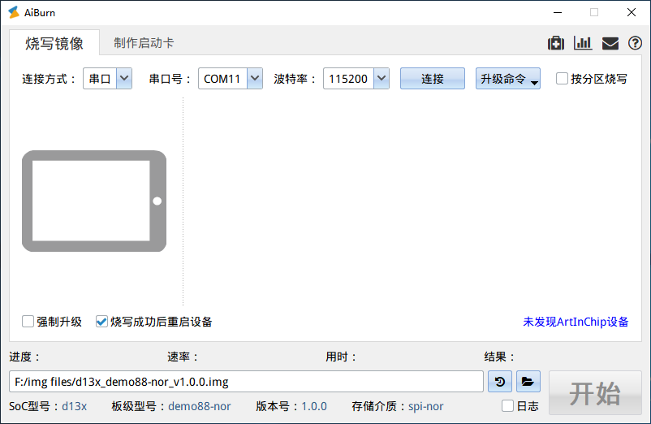
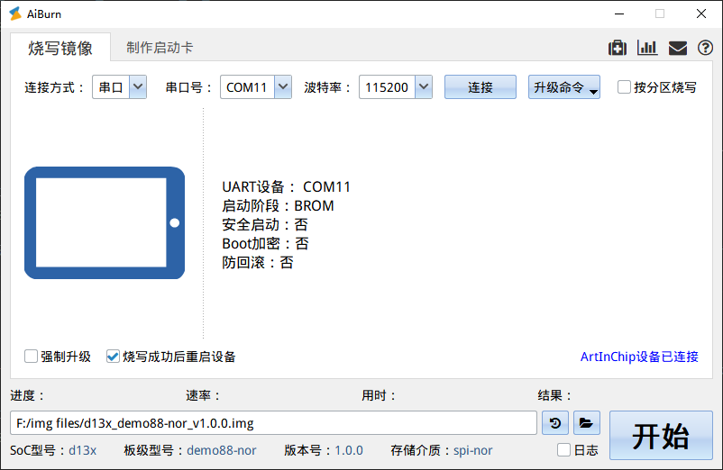
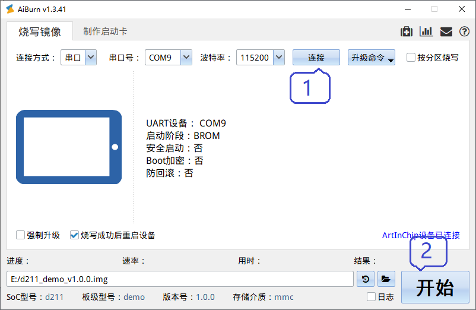
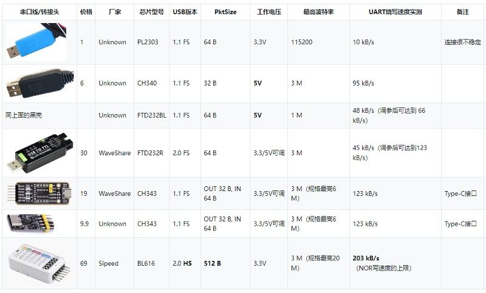

串口线
15 Jan 2024
Read time: 1 minute(s)
串口线可以借助 AiBurn 进行刷机，但具有下列限制：
-
一般情况下，串口烧录速度比较慢，烧录速度在几个到几十个 KB 之间。
-
使用普通的 USB 转串口，建议使用 115200 的波特率。
-
仅 uart0 支持串口烧录。
设置 AiBurn 工具
在正式烧录之前，按照下列流程设置 AiBurn 工具：
-
选择连接方式：串口
-
选择串口号：PC 上的烧录串口的设备号
-
设置波特率：支持 115200、921600、1M 和 3M 配置。
波特率越高，升级越快，但对串口设备的性能要求越高。设置之前，确认所使用的串口线是否支持选中的波特率。
-
固件：串口烧录对固件不做特殊更改

烧录镜像（串口）
如需进行串口烧写，设备需使用单独的电源，不能通过 PC 的 USB 口或者 HUB 供电，否则 PC 会将其识别为 USB 设备。
按照下列步骤流程，打开串口并进行烧录：
-
使开发板进入刷机模式。
-
打开 AiBurn 工具的烧写镜像界面。
详细操作，可参考烧写镜像 (USB)。
-
点击连接按钮，建立 AiBurn 到开发板的通路，通过串口获取设备硬件信息。
如果右下角显示下列设备硬件信息，表示连接成功：ArtInChip 设备已连接

-
连接成功后，点击开始，执行烧写流程。

工具推荐
串口线的品质对烧录的影响比较大，下图为测试的不同工具的性能和稳定性，推荐 CH343 的型号： https://detail.tmall.com/item.htm?_u=u3eibcm9050&id=677699341024&spm=a1z09.2.0.0.43da2e8diEP1l3
